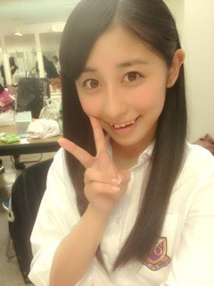

| 2012/11 15 Thu | ブログ一周年(´>∀<｀)ゝ |
久しぶりの通学電車投稿ヾ(*･∀･*)ﾉﾞ
こんにちはるんっっ
昨日、やっと後期中間テスト終わりましたー(´>ω<｀)

めっちゃ嬉しい♡♡♡
開放感まっくす！！！
応援してくれた皆さんありがとうございました(>ω<)♪♪
さてはて、
今日はなんの日ー⁇
今日はなんと、ちはるブログ一周年の日(´>∀<｀)ゝ
いつもいつもありがとう(*´˘`*)♡
一年前のブログ見返してたら
コメント数が20にもいってなかったり
ブログの内容も少なくて他人行儀で
つまらない子だったなーって。
素がでてないんだなーって。
コメント数も、いまでは100も増えて(>ω<)
ありがとう。ありがとう。
今では、内容も盛りだくさんにしようと心がけてます。
今では、読んでて楽しいブログにしようと心がけてます。
今では、飾らないで素にいれるようにって心がけてます。
いまこうして振り返ってみると、自分も少しは成長したかなっ?
どうだろう...(´･ω･`)
一年前の自分と比較っ
Before
After

上は、乃木どこの体力測定のとき。
変わった？？？
かなー？？？笑
あのね、ブログって、その子の成長とか、日常とか、素とかそーいうものを
身近で読み取れる一番簡単な方法だと思うんですよ( ^ω^ )！！！
だからこそたくさんの方に読んで欲しいし、見て欲しいし、意見も聞きたい。
ブログ読んでるよ！
コメントしてるよ！
って、ものすごく嬉しかったりする。実は。(//ω//)
だからほんとうに皆さんいつも感謝してます( ；∀；)

ありがとう。ありがとう。
一周年だったんで語ってしまった(｢･ω･)｢あうちっ
感謝してます。
そんなファミリーの皆さんの名前を、今回発表したいと思います！！！
♡
ないすたいみーんぐっっ
発表！！！
ちはるを応援したい方々が集まる部屋。
＼
ちはるーむ
／
ちはるーむに集う、住人たち。
＼
ちはるーむめいと
／
大多数の方の意見がちはるーむ、そしてちはるーむめいとだったんです！
だから皆さんの意見、そして
ファミリーとか族とかみんなが使ってるものとはかぶりたくない(>ω<)
ってゆーちはるの勝手な意見でこれに決定しました

るーむなら、新規の方々も入ってこやすいと思うしヾ(*･∀･*)ﾉﾞ
あ、出ちゃだめよ？？笑
＼ちはるーむめいとはこんな人／
＊少しでもちはるのことをいいと思ったかた。
＊応援したいな、って思ったかた。
＊握手会やイベントで会ったかた。
＊そして推してくれてるかた！
ちはるーむめいと希望の皆さんを待ってますよヾ(*･∀･*)ﾉﾞ

今日はここまで！
テストが終わったあとってゲームやりたくなるよねー
とゆことでパズドラにハマってるよねー
どうぶつの森欲しいよねー
わーーー＼(^^)／
いつもありがと。
ばいるんっ
るんるんっ
ちはるんっ
(´>∀<｀)ゝ
コメント(147)
2012/11/15 07:54